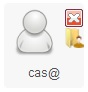

Pantalla de Home del Administrador
ECO IDE cuenta con un usuario administrador, encargado de todas las operaciones de gestión de alto nivel. El administrador podrá eliminar usuarios tanto registrados como aquellos que está en proceso de activación. Tiene a disposición un componente que le permite tener un control de acceso a la aplicación, es decir, tendrá la posibilidad de conocer los tiempos de inactividad de los usuarios en la aplicación
La figura anterior corresponde a la pantalla que visualiza el administrador una vez ingresa a la aplicación. Básicamente consiste en dos paneles:
- Izquierdo: Panel que contiene información sobre el perfil del programador, algunos filtros básicos para los proyectos, y un recuadro dispuesto para visualizar los detalle de un proyecto cuando alguno ha sido seleccionado.
- Ver Todos: Visualiza todos los proyectos de la aplicación sin aplicar ningú filtro.
- Compartidos: Visualiza todos los proyectos que están siendo compartidos en la aplicación
-
Derecho: Panel donde se observarán los usuarios y proyectos según se haya solicitado desde alguna opción del panel izquierdo.
Por ejemplo, en caso de que el administrador se decida en filtrar por usuarios activos desde el panel izquierdo. La aplicación hará la respectiva consulta y visualizará los usuarios como se puede apreciar en la siguiente imagen:

A través de este icono el administrador podrá ver dos pequeños iconos al costado derecho siempre y cuando pose el cursor sobre la imagen del usuario. Estos pequeños iconos le permitirán eliminar el usuarios, tal y como lo indica la 'X', y también es posible ver los proyecto que tiene este usuario en la aplicación.
Nota: Algo similar sucede cuando el adminitrador dá clic en la opción "En Espera"
Si el adminitrador usa las opciones del panel de Proyectos, podrá visualizar si asi lo requiere, todos los proyectos de la aplicación sin tener en cuenta el propietario o si es compartido o no. TAmbién es posible para el administrador filtrar por los proyectos que son compartidos en la aplicación.
| El panel de Usuarios le permitirá al administrador visualizar los usuarios activos de la aplicación, además de aquellos que aún se encuentran en espera de activación. El administrador tendrá acceso desde aqui a un componente que le permite verificar los últimos ingresos hasta determinada fecha. | |
|
Panel de Proyectos que permite, realizar un filtro básico.
|
|
| Panel de Detalles de los datos de un Usuario seleccionado en el panel derecho. |